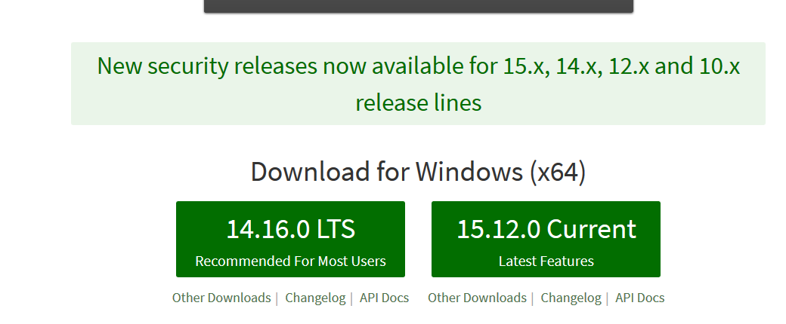
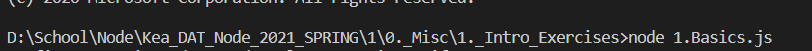

First to be able to use Node JS you have to have it installed. To do that go to the link specified below and download either the latest version or the most stable release.

After that go through the install wizzard. You can then check if the installation was complete by opening a console on your machine and writing npm or node -v. You can find these commands at the bottom of the page.
To use Node Js open a EDI(I suggest Visual Studio Code).
Create a .js file you can write some Javascript code if you would like or leave it blank. After that open the console and navigate to your file when you do type in that console: node name_of_js_file.js. I also suggest to install nodemon as it helps to run express servers better. 
Download Link:Click Here
npm install -g nodemon
node -v
npm -v